and the| Monday | Tuesday | Wednesday | Thursday | Friday | |
| 0900 -- 1000 | Registration | ||||
| Alex Best | Kevin Buzzard | Alain Chavarri Villarello | Katerina Hristova | Andrew Yang | |
| 1000 -- 1100 | |||||
| Coffee break | |||||
| 1100 -- 1200 | David Roe | Junyan Xu | Richard Hill | Short talks | Xavier Roblot |
| 1200 -- 1300 | Catered lunch | ||||
| 1300 -- 1400 | Riccardo Brasca | David Loeffler | Bhavik Mehta | Short talks | Presentations |
| 1400 -- 1500 | Coffee break | Free afternoon | Coffee break | ||
| Project work | Project work | ||||
| 1500 -- 1600 | |||||
| 1600 -- 1700 | Coffee break | Coffee break | |||
| Project work | Project work | ||||
| 1700 -- 1800 | |||||